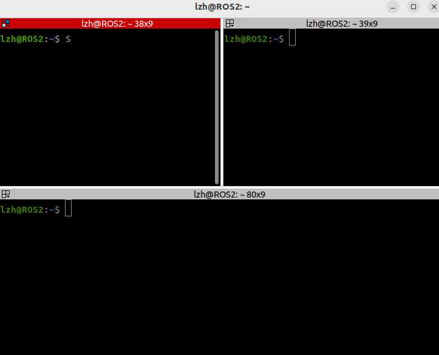
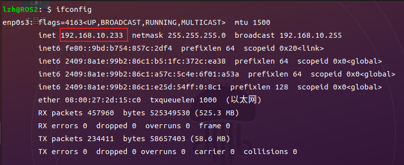
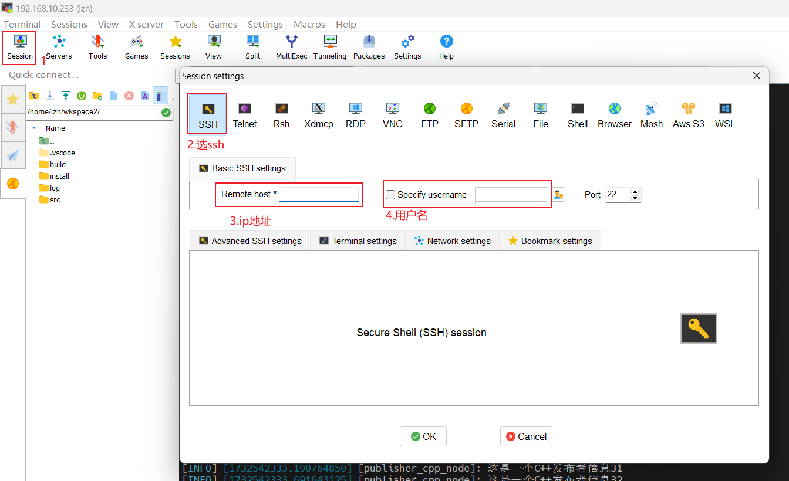

第三章 ROS2工具准备¶
3.1 Terminator¶
在 ROS 2中，需要频繁的使用到终端，且可能需要同时开启多个窗口，推荐一款较为好用的终端:Terminator。
下载完以后Ctrl+Alt+T 命令就可以打开terminator终端，替换了默认的系统终端，同时在终端右键可以选择上下左右分隔多个终端。

Terminator 常用快捷键
第一部分：关于在同一个标签内的操作
Text Only
Alt+Up //移动到上面的终端
Alt+Down //移动到下面的终端
Alt+Left //移动到左边的终端
Alt+Right //移动到右边的终端
Ctrl+Shift+O //水平分割终端
Ctrl+Shift+E //垂直分割终端
Ctrl+Shift+Right //在垂直分割的终端中将分割条向右移动
Ctrl+Shift+Left //在垂直分割的终端中将分割条向左移动
Ctrl+Shift+Up //在水平分割的终端中将分割条向上移动
Ctrl+Shift+Down //在水平分割的终端中将分割条向下移动
Ctrl+Shift+S //隐藏/显示滚动条
Ctrl+Shift+F //搜索
Ctrl+Shift+C //复制选中的内容到剪贴板
Ctrl+Shift+V //粘贴剪贴板的内容到此处
Ctrl+Shift+W //关闭当前终端
Ctrl+Shift+Q //退出当前窗口，当前窗口的所有终端都将被关闭
Ctrl+Shift+X //最大化显示当前终端
Ctrl+Shift+Z //最大化显示当前终端并使字体放大
Ctrl+Shift+N or Ctrl+Tab //移动到下一个终端
Ctrl+Shift+P or Ctrl+Shift+Tab //Crtl+Shift+Tab 移动到之前的一个终端
第二部分：有关各个标签之间的操作
Bash
F11 //全屏开关
Ctrl+Shift+T //打开一个新的标签
Ctrl+PageDown //移动到下一个标签
Ctrl+PageUp //移动到上一个标签
Ctrl+Shift+PageDown //将当前标签与其后一个标签交换位置
Ctrl+Shift+PageUp //将当前标签与其前一个标签交换位置
Ctrl+Plus (+) //增大字体
Ctrl+Minus (-) //减小字体
Ctrl+Zero (0) //恢复字体到原始大小
Ctrl+Shift+R //重置终端状态
Ctrl+Shift+G //重置终端状态并clear屏幕
Super+g //绑定所有的终端，以便向一个输入能够输入到所有的终端
Super+Shift+G //解除绑定
Super+t //绑定当前标签的所有终端，向一个终端输入的内容会自动输入到其他终端
Super+Shift+T //解除绑定
Ctrl+Shift+I //打开一个窗口，新窗口与原来的窗口使用同一个进程
Super+i //打开一个新窗口，新窗口与原来的窗口使用不同的进程
其实这些命令很少有，使用虚拟机学习时，会开多个终端即可
3.2 Vscode¶
Vscode是ROS2开发必备的代码编辑工具
ubuntu可以使用一键安装，选择vscode即可
Windows则需要手动安装（由于我采用Vscode和MobaXterm结合的远程连接开发模式，所以介绍windows安装）
下载地址：Visual Studio Code
3.3 MobaXterm¶
MobaXterm是一个很方便的ssh连接工具，同时支持X11可以查看图形化程序结果。实际开发Linux开发板时，我一般喜欢使用Vscode和MobaXterm结合，均使用ssh远程连接，Vscode修改查看运行不需要图形化结果的程序，需要查看图形化结果的程序（如Qt、ROS的RVIZ等均可查看）则切换到MobaXterm运行。
MobaXterm看自己开发需求，全程使用虚拟机则不需要一定安装。由于我自己的虚拟机比较卡，且不喜欢虚拟机ubuntu上使用Vscode，所以我继续采用Vscode和MobaXterm结合的远程连接开发模式。
官方下载连接，选择免费版下载安装即可。
MobaXterm： MobaXterm下载地址
ubuntu打开终端，配置远程连接服务
在ubuntu中输入命令查看 ip地址，缺少插件按照终端提示安装即可，

安装下图，输入自己的 IP 和 用户名 即可完成连接
